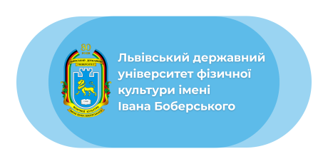
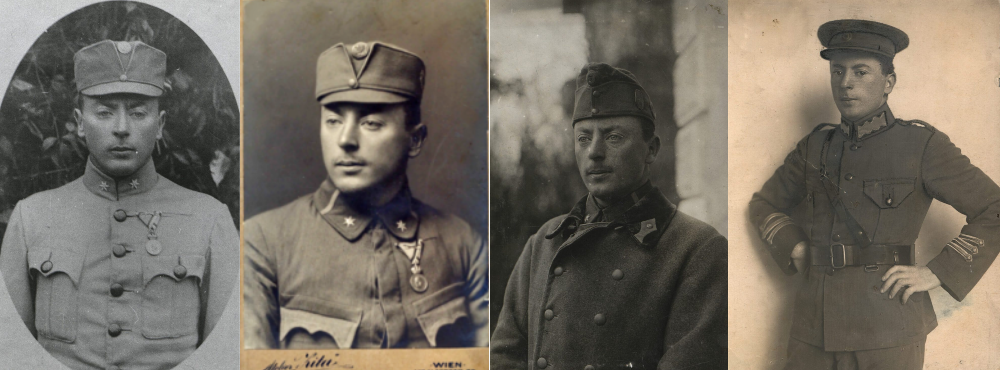

Географія життя, діяльності та пам'яті українського педагога, науковця, авіатора та громадського діяча.

Петро Франко був одним із діячів, які сприяли становленню та розвитку української фізичної культури на початку XX століття. Педагог, спортсмен і популяризатор тіловиховання, він долучався до організації спортивного руху, поширення гімнастики та формування українських традицій фізичного виховання. Особливу увагу приділяв вихованню молоді, розглядаючи фізичний розвиток як важливу складову освіти й суспільного життя.
На мапі зібрано фотографії, архівні документи та історичні матеріали, що розкривають географію життя й діяльності Петра Франка (1890–1941). Позначені місця пов’язані з різними етапами його біографії, педагогічною, науковою, спортивною та громадською діяльністю. Матеріали дають змогу простежити його внесок у розвиток української фізичної культури, побачити історичний контекст його діяльності та відкрити просторовий вимір біографії — через місця, події й середовища, з якими було пов’язане його життя.
Архівні фотографії та документи походять з Центрального державного історичного архіву України, м. Львів (ф. 640, оп. 1, спр. 3), які доступні на платформі "Франкові", з колекції Бібліотеки Інституту Народознавства при НАНУ та з колекції Лесі Крипякевич, цифрові копії яких зберігаються у Міському медіаархіві Центру міської історії, з колекції Валерія Ковтуна.